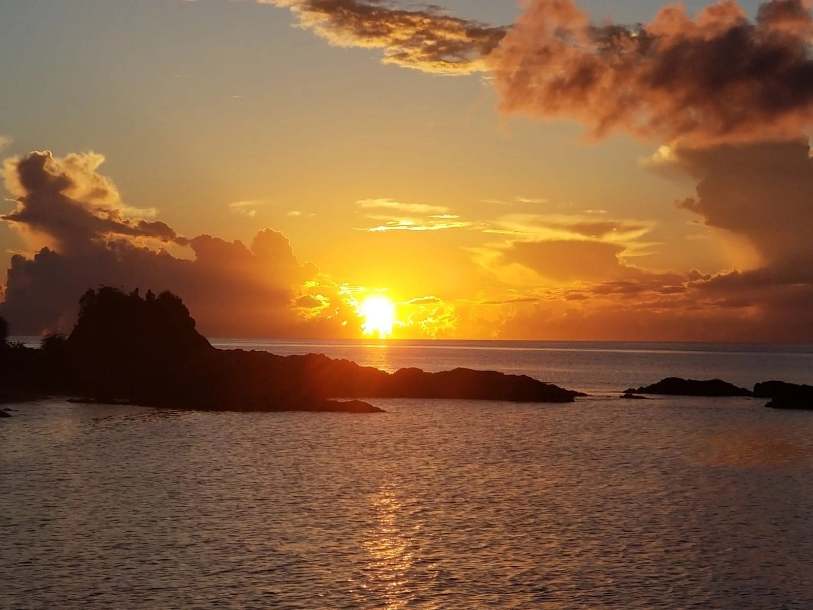
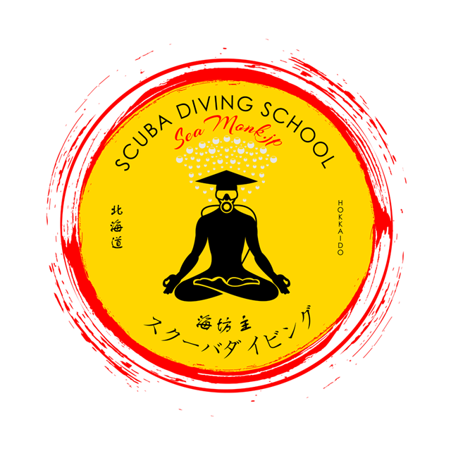

Strona internetowa dla firmy turystycznej – SeaMonk
Wielojęzyczny serwis polskiej szkoły nurkowania na Okinawie. Oferta, miejsca nurkowe, przygotowanie uczestnika i kontakt zostały połączone w jedną czytelną ścieżkę.


Case study
SeaMonk.jp
Projekt strony szkoły nurkowania na Okinawie łączy atmosferę miejsca z praktycznymi informacjami: ofertą kursów, nurkowaniami rekreacyjnymi, lokalnymi spotami i kontaktem. Angielska i japońska wersja prowadzą odbiorcę przez tę samą, uporządkowaną strukturę.
Prezentujemy archiwalne ekrany projektu. Obecna zawartość domeny może różnić się od przedstawionej realizacji.
Jedna strona prowadzi klienta od inspiracji do rezerwacji.
Każdy ekran ma konkretne zadanie: pokazać atmosferę nurkowania, wyjaśnić ofertę i ułatwić bezpośredni kontakt.
seamonk.jp
Pierwsze wrażenieWyrazisty zachód słońca i logo od razu budują charakter marki.
seamonk.jp / courses
Czytelna ofertaKursy i poziomy doświadczenia można szybko porównać.
seamonk.jp / activities
Prosty wybórJednodniowe aktywności opisane są bez zbędnych komplikacji.
seamonk.jp / booking
Łatwa rezerwacjaNajważniejsze informacje i formularz znajdują się obok siebie.
Od problemu do rozwiązania
Jak uporządkowaliśmy wielojęzyczną ofertę turystyczną?
Wyzwanie
Klient planujący nurkowanie chce szybko rozpoznać poziom kursu, wymagania, lokalizację, zakres aktywności i sposób rezerwacji. Przy dwóch językach łatwo stworzyć dwie niespójne wersje. Potrzebna była jedna architektura, którą można konsekwentnie zastosować po angielsku i japońsku.
Decyzja projektowa
Podzieliliśmy ofertę według intencji: kursy, jednodniowe nurkowania i snorkeling. Każda ścieżka prowadzi od inspiracji przez wymagania do kontaktu. Zdjęcia Okinawy budują emocję, natomiast jasne bloki tekstowe i powtarzalne działania utrzymują czytelność.
Zakres wdrożenia
responsywny układ dla telefonu i dużego ekranu,
spójne komponenty dla dwóch wersji językowych,
struktura kursów i miejsc nurkowych,
czytelne wezwania do kontaktu i rezerwacji,
optymalizacja obrazów oraz metadanych społecznościowych.
Wartość dla odbiorcy
Strona pozwala zebrać najważniejsze informacje przed rozmową. Użytkownik może porównać aktywności, sprawdzić wymagania i przejść do kontaktu bez szukania danych w kilku miejscach. To przykład, jak projekt informacji wspiera firmę turystyczną bez sztucznego komplikowania doświadczenia.
Dlaczego ten projekt jest interesujący?
Strona odpowiada na realne pytania klienta jeszcze przed rozmową.
01
Dwa języki, jeden spójny proces
Angielska i japońska wersja pomagają obsługiwać turystów oraz lokalnych klientów bez chaosu informacyjnego.
02
Oferta, którą łatwo zrozumieć
Kursy, nurkowania jednodniowe i snorkeling są uporządkowane według potrzeb i poziomu doświadczenia.
03
Krótsza droga do rezerwacji
Klient od razu widzi wymagane informacje i może wysłać kompletne zapytanie bez dodatkowej wymiany wiadomości.
04
Charakter dopasowany do Okinawy
Zdjęcia, intensywny żółty kolor i swobodna typografia budują zapamiętywalny klimat szkoły nurkowej.